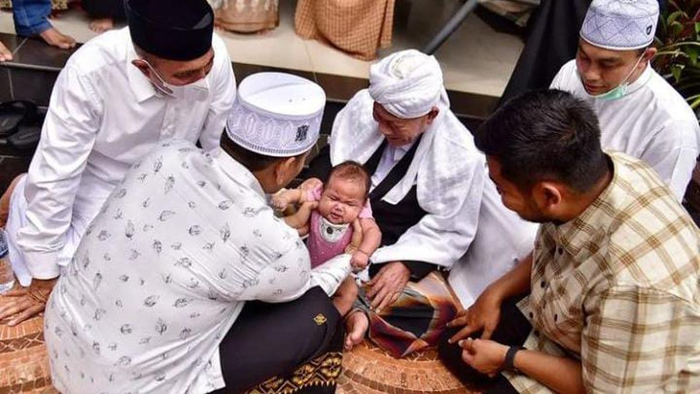

Sosial, politik, ekonomi, budaya, dan agama dari Kerajaan Samudra Pasai
Kehidupan Sosial
Kehidupan sosial masyarakat diatur bedasarkan ajaran Islam (hukum Islam). Dalam pelaksanaannya banyak terdapat
persamaan dengan kehidupan sosial masyarakat Arab, karenanya daerah itu mendapat julukan Serambi Mekkah karna
kehidupan sosialnya sama dengan Mekkah, jadi baik sosial, adat itu sama. Masyarakat di Kerajaan Samudra Pasai
sangat menghormati para ulama dan memandang mereka sebagai pemimpin spiritual.
Struktur sosial Kerajaan Samudra Pasai ada bangsawan, pedagang, dan rakyat biasa. Bangsawan mencangkup Sultan dan keluarganya.
para pedagang terlibat dalam perekonomian dan Islamisasi, dan rakyat biasa melakukan kegiatan sehari-hari seperti di bidang perikanan maupun pertanian.
Kehidupan Ekonomi
Perekonomian Kerajaan Samudra Pasai berpusat pada perdagangan karena letaknya strategis di Selat Malaka.
Pada masa Sultan Malik Al-Saleh, kerajaan berkembang menjadi pelabuhan internasional yang penting, makmur,
dan memiliki pertahanan kuat. Untuk menghadapi ancaman Kerajaan Siam, Samudra Pasai menjalin hubungan
dengan Kerajaan Cina. Kerajaan Samudra Pasai memiliki hegemoni (pengaruh) atas pelabuhan-pelabuhan penting di Pidie,
Perlak, dan lain-lain. Samudra Pasai berkembang pesat pada masa pemerintahan Sultan Malik al-Tahir II. Hal ini juga sesuai
dengan keterangan Ibnu Batulah. Mata pencaharian masyarakat di sana adalah perdagangan maritim, rempah-rempah, pertanian,
emas, juga sutra dengan mata uang koin emas dirham
Kehidupan Politik
Sesuai namanya, Kerajaan Samudra Pasai memiliki sistem pemerintahan monarki bercorak Islam.
Di dalam kerajaan tersebut terdapat struktur kepemimpinen dengan tugasnya masing-masing. Sultan merupakan pemimpin tertinggi dan dianggap mendapatkan kekuasaan dari Allah SWT. Patih atau Amir
bertugas membantu sultan dalam menjalankan pemerintahan. Syahbanda bertugas untuk mengawasi perdagangan di pelabuhan,
dan Qadi bertugas sebagai kepala mahkamah agama.
Kehidupan Budaya

Sebagai kerajaan maritim, di Samudra Pasai tidak banyak ditemukan peninggalan budaya.
Benda hasil kebudayaan di Kerajaan Samudra Pasai, seperti batu nisan atau jirat putri Raja Samudra
Pasai yang didatangkan dari Gujarat.
Terdapat tradisi peutron aneuk (masih ada sampai sekarang): upacara adat daur hidup Aceh yang
dilakukan untuk bayi yang baru lahir, biasanya antara 7 hingga 44 hari setelah kelahiran
di kerajaan ini juga berkembang suatu kehidupan yang menghasilkan karya tulis yang baik. Sekelompok minoritas
kreatif berhasil memanfaatkan huruf Arab yang dibawa oleh agama Islam, untuk menulis karya mereka dalam bahasa Melayu. Salah satu karya sastra dari Kerajaan Samudra Pasai adalah "Hikayat Raja-Raja Pasai".
Kehidupan Agama
Kehidupan agama di Kerajaan Samudra Pasai sangat dipengaruhi oleh Islam,
yang menjadi agama resmi dan didukung oleh penguasa. Kerajaan ini terkenal sebagai pusat
penyebaran Islam di Nusantara dan menjalin hubungan erat dengan dunia Islam lainnya.